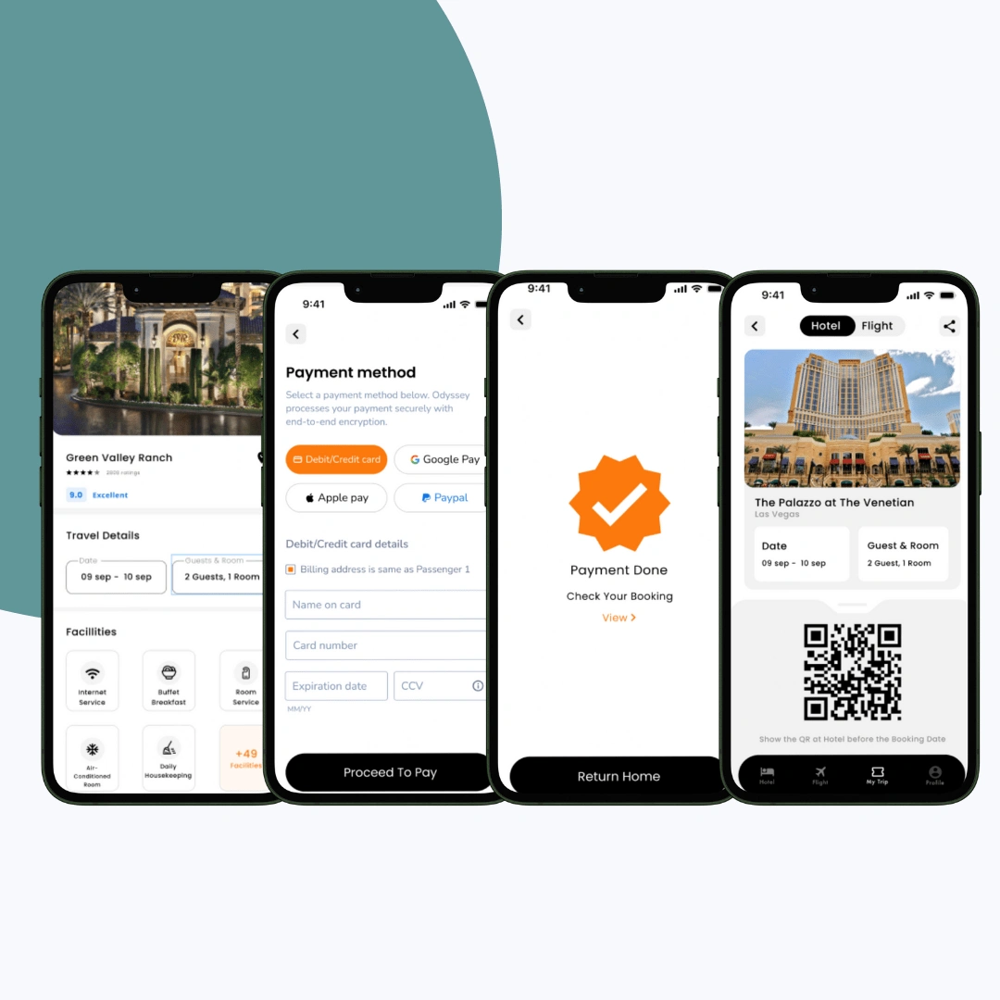
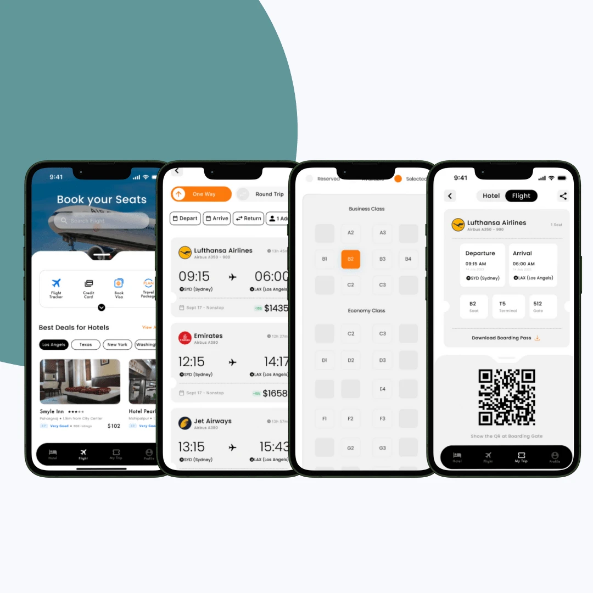

Odyssey, stays that feel like nature.
Odyssey is a travel booking app that connects modern explorers with forest resorts and boutique stays. I delivered its logo design and mobile-first UI/UX, from a tree-inspired logomark to a calm, thumb-friendly booking experience across Android and iOS.

The objective
Odyssey wanted a design system that mirrored its philosophy as a booking app connecting modern explorers with forest resorts and boutique stays. The goals were clear: craft a logo that symbolises harmony, growth, and exploration, design a clean and intuitive interface for smooth bookings, and prioritise a mobile-first experience for modern travellers across Android and iOS.


Our approach
I led with a tree-inspired logo representing growth, roots, and serenity, paired with a calm green and soft neutral palette and modern, legible fonts. The interface used a minimalist layout that keeps the booking flow front and center, with thumb-friendly interactions and microanimations tuned for mobile. The result is a calm visual and digital identity that feels effortless to search, explore, and book.


Our process
The project moved through six stages: brand discovery, logo development, visual language, UI/UX design, microinteractions, and handoff and scalability, with the design work produced in Figma and Miro. That sequence gave Odyssey an identity and experience that speak the language of both adventure and peace, with a visual identity built to scale across web, app, and offline collateral without losing clarity.

